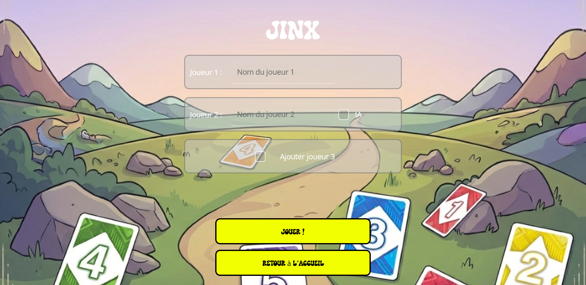
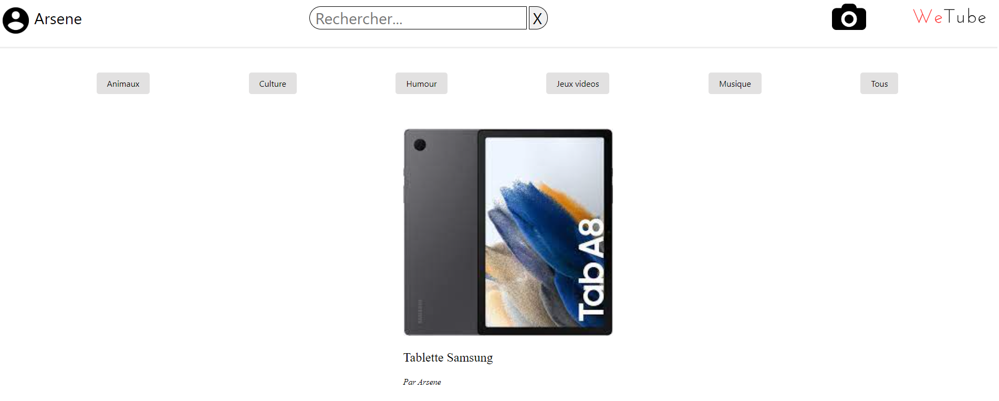

Mes Projets
Jinx — Application desktop .NET MAUI
Dans le cadre de l'UE 2.1 — Développer des applications informatiques simples — j'ai participé au développement d'une application desktop du jeu de cartes Jinx. L'objectif était de proposer une version numérique fidèle au jeu original, enrichie par les possibilités du numérique.
J'ai travaillé sur la logique applicative en C# et la conception de l'interface avec .NET MAUI. L'application permet de lancer et sauvegarder une partie, de créer un profil joueur et de personnaliser l'expérience visuelle. Elle intègre des événements aléatoires dynamiques pour augmenter la rejouabilité.
Ce projet mobilise les compétences C1 (développement), C5 (conduite de projet) et C6 (travail en équipe), avec utilisation de Git pour la gestion collaborative du code.

WeTube — Site de partage de documents
En classe de Terminale, j'ai développé WeTube, un site de partage de documents, dans le cadre d'un projet scolaire, puis j'ai choisi de le poursuivre seul pour aller plus loin.
Conçu en HTML, CSS, PHP et SQL, le site permet de créer un compte, de se connecter, de publier des documents et d'interagir avec ceux des autres. Je me suis occupé de la conception globale, de la structure de la base de données, de la gestion des utilisateurs et de l'affichage dynamique des contenus.
Ce projet m'a appris à travailler de manière autonome, à structurer un projet complet de l'idée jusqu'au résultat fonctionnel, et à approfondir le back-end avec PHP et SQL.
